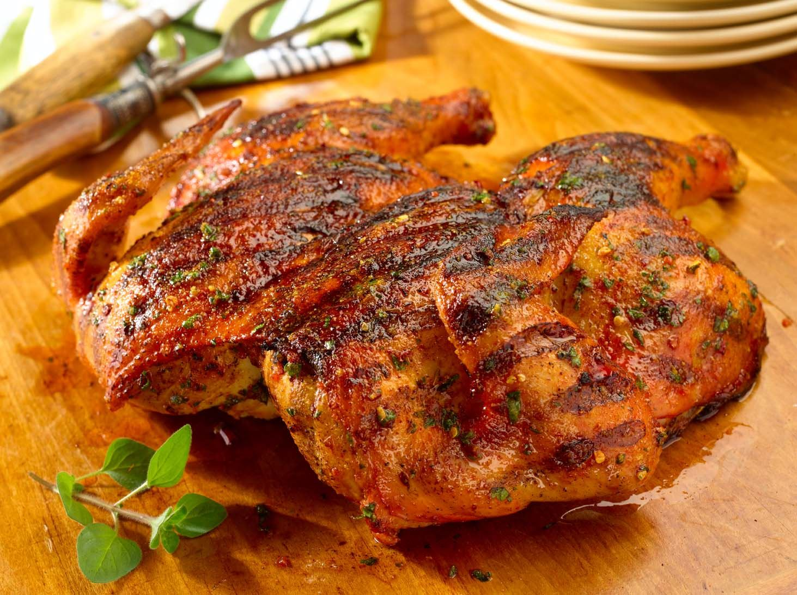
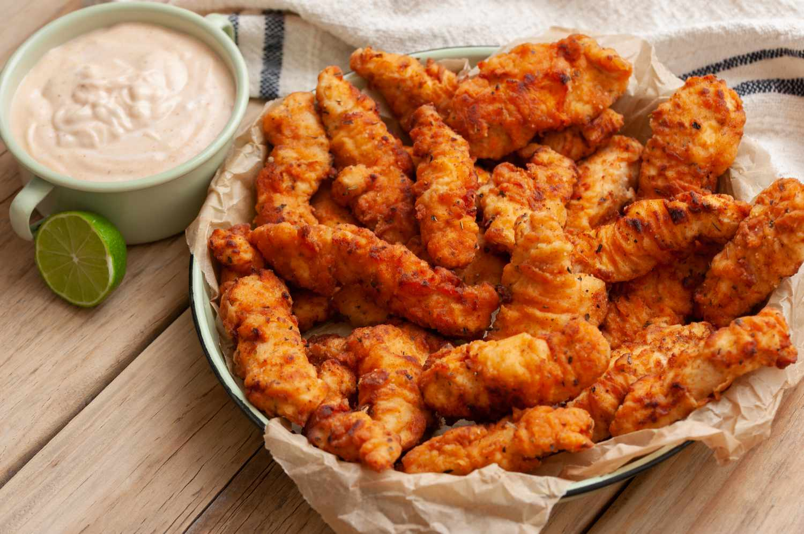
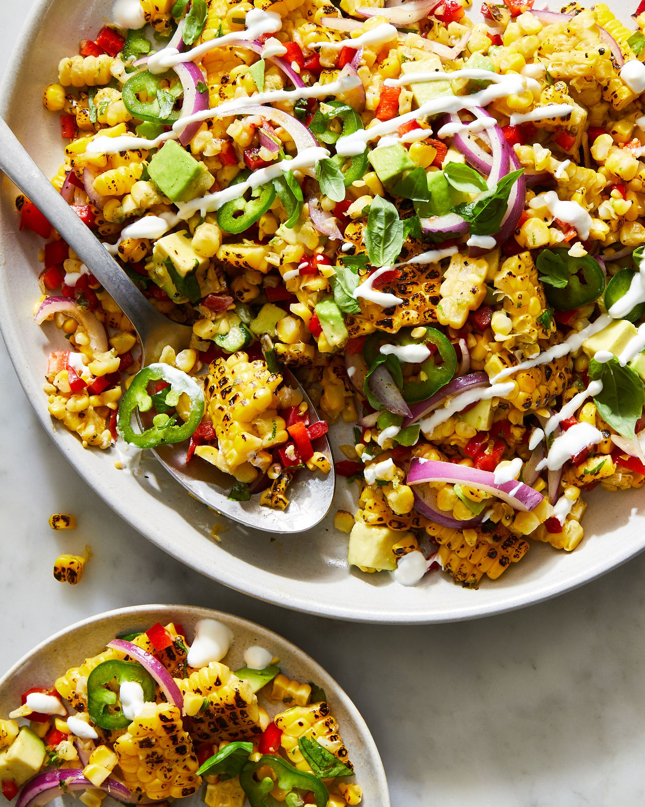

Pollo a la Parilla

Ingredients
- 4 chicken breasts
- 2 tbsp olive oil
- 1 tbsp lime juice
- 1 tsp paprika
- 1 tsp garlic powder
- Salt and pepper to taste
Instructions
- Marinate the chicken with olive oil, lime juice, paprika, garlic powder, salt, and pepper.
- Heat a grill to medium-high and cook the chicken for 6-7 minutes per side, or until fully cooked.
- Serve hot with a squeeze of lime on top.
Hot Chicken Tenders

Ingredients
- 500g chicken tenders
- 1 cup buttermilk
- 1 cup flour
- 1 tsp cayenne pepper
- 1 tsp paprika
- Oil for frying
- Salt to taste
Instructions
- Soak chicken tenders in buttermilk for at least 30 minutes.
- Mix flour, cayenne pepper, paprika, and salt in a bowl.
- Coat the tenders in the flour mixture, then fry in hot oil until golden and crispy.
- Drain on paper towels and serve with your favorite dipping sauce.
Sides Fiesta

Ingredients
- 2 cups mixed vegetables (corn, bell peppers, black beans)
- 1 tbsp olive oil
- 1 tsp cumin
- 1 tsp chili powder
- 1/2 tsp garlic powder
- Salt and pepper to taste
Instructions
- Heat olive oil in a skillet over medium heat.
- Add mixed vegetables and season with cumin, chili powder, garlic powder, salt, and pepper.
- Cook for 5-7 minutes until vegetables are tender and flavors are well combined.
- Serve as a side dish or as a topping for tacos and burritos.